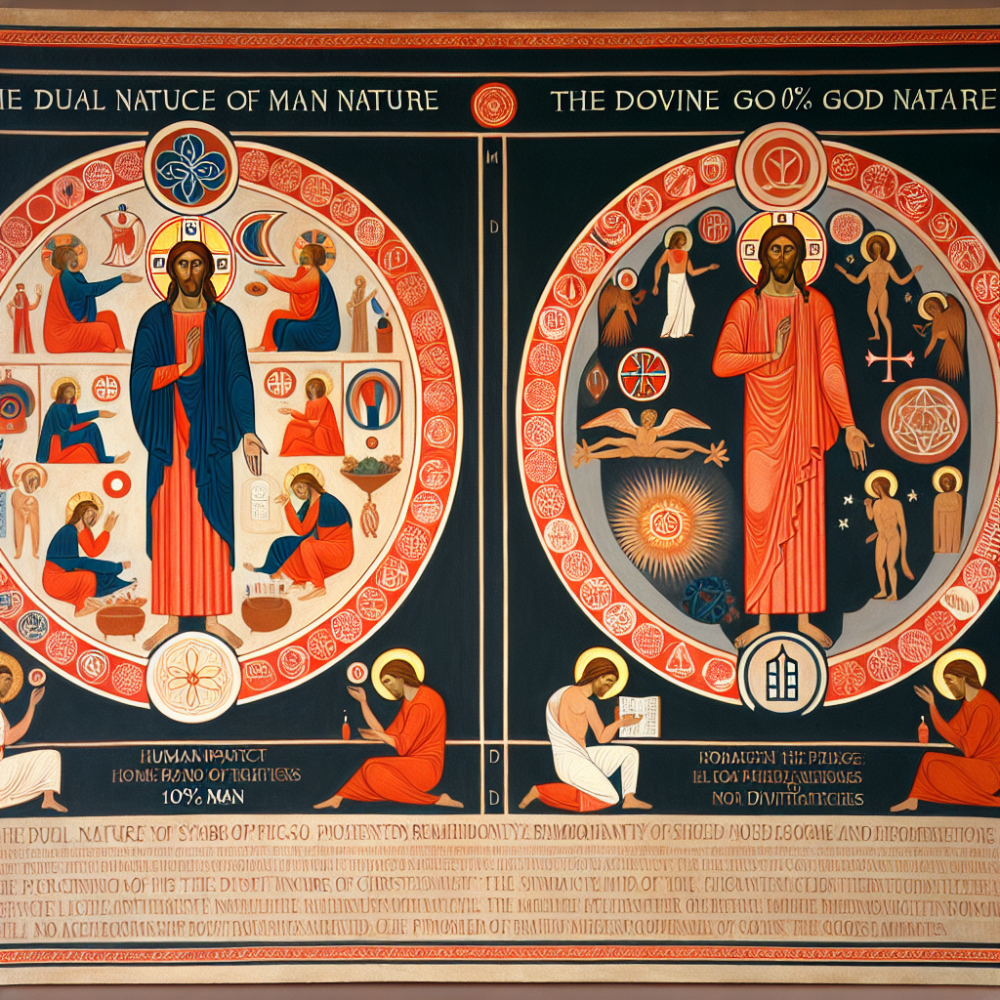

Why Jesus Christ is 100 percent man and 100 percent God?
In the realm of Christian theology, the nature of Jesus Christ is a topic that has intrigued scholars, theologians, and believers for centuries. One of the fundamental tenets of the Christian faith is the belief that Jesus Christ is both fully man and fully God. This concept, known as the hypostatic union, is a central aspect of Christian doctrine and is essential for understanding the nature of Jesus Christ.
The idea that Jesus is 100 percent man and 100 percent God may seem paradoxical or even contradictory at first glance. How can one person be both fully human and fully divine? To grasp this concept, we must delve into the heart of Christian theology and explore the mystery of the Incarnation.
The Incarnation refers to the belief that God took on human flesh and became incarnate in the person of Jesus Christ. This divine act of condescension is a profound expression of God's love for humanity and his desire to reconcile us to himself. In the person of Jesus, we see the perfect union of divinity and humanity, two natures existing harmoniously in one person.
The Bible provides ample evidence to support the belief in the dual nature of Jesus Christ. In the Gospel of John, we read that "the Word became flesh and made his dwelling among us" (John 1:14). This verse encapsulates the essence of the Incarnation – the eternal Word of God, who is fully divine, took on human form and dwelt among us as a man.
Throughout his earthly ministry, Jesus demonstrated his dual nature through his words and actions. He displayed divine authority by performing miracles, forgiving sins, and fulfilling Old Testament prophecies. At the same time, he experienced human emotions, limitations, and temptations, showing that he was truly one of us.
The belief in the dual nature of Jesus Christ has profound implications for our understanding of salvation and the Christian life. Because Jesus is both fully man and fully God, he is able to serve as the perfect mediator between God and humanity. Through his sacrificial death on the cross, Jesus atoned for our sins and reconciled us to God, offering us the gift of salvation and eternal life.
As we strive to be more Christ-like in our own lives, we can look to Jesus as the ultimate example of what it means to live in perfect harmony with God. By studying his teachings, emulating his character, and relying on the power of the Holy Spirit, we can grow in our understanding of Christ-likeness and become more like our Savior each day.
In conclusion, the belief that Jesus Christ is 100 percent man and 100 percent God is a foundational truth of the Christian faith. It is a mystery that transcends human understanding but reveals the depth of God's love and the extent of his redemptive plan for humanity. As we contemplate the dual nature of Jesus Christ, may we be inspired to deepen our faith, grow in our knowledge of God, and strive to reflect the character of Christ in all that we do.